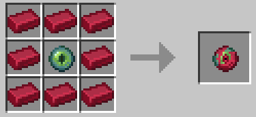

About the mod
Elementalis use a custom made mod which add new ores, items, mobs, structures and much more, here's a list :
Elements
Fire
◆ Ignisium : an ore found in the nether
◾ Ignisium eye : a projectile which create a ball of lava where it touch the ground
◾ Infernal flint and steel : a regular flint and steel, however it place lava instead of fire
► Fire axe ( only for fire elementals ) : a strong axe with fire aspect

◆ Demon eye : an hostile mob found in hot areas, it fly towards you before exploding like a creeper
◆ Hell cow : a pasive mob found in hot areas, it give lava when a bucket is used on it
Water
◆ Aquatine : crafted from diamond and nautilus shells
◾ Poseidon chestplate : a very strong armor making you invicible, however it has very low durability
◾ Infinity bucket : a bucket which never get full
► Flooding boots ( only for water elementals ) : create a 3x3 water block around you when worn
◆ Water slime : an hostile mob summoned when a water slime bucket is used, it's a strong slime which drop water slime balls
◾ Water slime balls : can be used to craft water pants which negates every fall damages
◆ Factice : A very fast type of fish made of aquatine.
Ice
◆ Crystalum : an ore found in icebergs and high up in mountains
◾ Frozen shovel : give slowness to whoever gets hitted
◾ Frozen trap : if stepped on, give very strong slowness and blindness
► Icy cake ( only for ice elementals ) : freeze every blocks in a 30x30 area when eaten

◆ Arctic eye : an hostile mob found in cold areas, it float aroun shooting frozen lasers
◆ Frozen chicken : a chicken but frozen
Earth
◆ Compressed cobblestone : crafted from vanilla cobblestone
◾ Drill : can create a 5x5 hole from where you are to the bedrock instantly, got 5 uses
◾ Entity detector : when in your hand it give you the exact number of entities around you
► Dwarf pickaxe ( only for earth elementals ) : an unbreakable pickaxe, better than netherite


◆ Mimic : an hostile mob which hide as minerals, if give blindness and weakness to everyone near it
◆ Fairy : a pasive mob found in cave which can lead you to chests
Air
◆ Ventuma : dropped by the air mobs
◾ Knockback ball : a projectile which make whoever gets hitted fly
◾ Ventuma potion : a potion giving levitation and resistance
► Wind shield ( only for air elementals ) : boots which make everything around you fly when worn


◆ Caelum : an hostile mob found on the floating isles, it's pretty much a blaze which throw knockback balls
◆ Lil torny : a pasive mob found in the floating isles, it give levitation and slow falling to whoever get close
Electricty
◆ Fulgurite : acts like andesite, it can be found underground
◾ Electrified flesh : give speed 3 when eaten
◾ Fulgurite ball : a projectile which create a lightning at the impact
► Electric trident ( only for electric elementals ) : a trident which create a lightning every time you use it

◆ Electrified zombie : a strong and fast zombie which spawns during lightning storms
◆ Felunder : a pasive cat found in the electric toundra, you can tame it with fulgurite, attack it at your own risk
Light
◆ Luxime : crafted from ghast tears and various light blocks
◾ Golden mask : an helmet which make your name invisible
◾ Luxime light : can be combined with a lot of vanilla blocks to turn them into light bloks
► Light boots ( only for light elementals ) : lights up the area around you when worn

◆ Rainbow star : crafted from rainbow fragments, found in the end and luxime
◾ Enchanted books : you can craft a lot of enchanted books from souls and rainbow books
◾ Rainbow sword : just a sword, the strongest one tho


◆ Ghost : an hostile mob which can sometimes spawn when a villager dies, it drop souls
◆ lil suny : a pasive mob found in the palace, do not look at it
Technical
◆ WORK IN PROGRESS
◾
◾
Bosses
How it works
In order to summon any boss, you will need to gather two element fragments, those can be found in the structure linked to the boss.
Once you obtained the fragments, you will have to craft the boss' totem and use it on the boss summoner, which can be found in the boss arena.
Be careful, the bosses are pretty strong so you will want to be with allies. in addition to that, you only get one lifen per boss,
if you die during the fight, you won't be abble to join it back and you will loose your stuff ( unlees the boss was part of an event).
Basics
Here is the list of every biomes, every structures and every totems crafts. (NOT AVAIBLE RIGHT NOW)
Fire
◆ Volcano
◾
◾ Found in the overwold. It is mostly made of blackstone and dead grass, you may find obsidian on the tallest volcanoes.
◾ You may encounter hell cows, demon eyes, striders and wither squeletons.
◆ Hellish tower
◾ Consisting of eight deadly floors, this tower is said to appear from hell to challenge the strongest wariors of this world. It is considered to be one,
if not the hardest dungeon, even for fire elementals, because of a ancient totem, located at it's top, which can remove any fire resistance one may have.
◾ This dungeon is usually found in the volcanoes craters, however it sometimes appears in the nether's lava lakes.
◾ You can loot there ignisium, diamonds, gold, iron, emeralds and fire fragments.


Water
◆ Void oasis
◾ This source of water in the middle of, quite literally, nothing is believed to be the most peaceful place in this universe.
In reality however, this place isn't safe at all, the water found there is higly poisounous and usually kills whoever drinks it.
If this ever happens, the soul of the fool is trapped in the oasis and seems to be consumed by the water after a while.
◾ Found in the end. It is composed of a single water lake, end grass and multiple trees.
◾ You may very rarely encounter ghost.
◆ Submerged castle
◾ A lot of reports describe this dungeon as " a terrifying place, full of metal pipes and elemental hazards, and don't get me
started on this water like creature, it alsmost killed all my squad". However the research team do not understand any of it since it is
quite literally an underwater castle, remnant of the elves kingdom, no metal pie or scary monster should be found there.
◾ This dungeon is found underwater, usually in the sea. Sometimes the towers will peak out of the sea.
◾ You can loot there aquatine, diamond, gold and water fragments.


Ice
◆ Frozen delta
◾ After the devasting attack of the earthling, the temperature in the nether drastically decreased. Therefor,
the coldest biome of the nether, the basalt delta, became even colder. In addition to the blackstone and basalt usually found there there's now
blue ice which appeared and all lava froze. For some reason magma cube still lives in this habit.
◾ Found in the nether, it is pretty much a basalt delta but colder.
◾ You may encounter magma cubes, artic eyes, frozen chickens and strays.
◆ Lost fortress
◾ A long time ago, when dwarves still lived on the overworld, their habit was the mountains. At this time, the mountains weren't frozen and
they lived in armony with sparves, a friendly type of spider which they addopted as their pets. However, after the incident, sparves were
left alone in the dwarf fortresses. Thinking they may come back one day, they decided to take care of thoses ruins, living in it and protecting it with all their might.
When the mountains started to freeze, sparves evolved into spices and kept protecting their, now frozen, home.
◾ Found on top of the mountains, sometimes only the entrance is visible from the exterior.
◾ You can loot there crystallum, diamonds, iron, netherite and ice fragments.


Earth
◆ Underground desert
◾ Sometimes, dripstone caves fall appart, when this happen the dripstone rock, known as the weakest stone ever, crakle into sand. Because of this fenomenon
undergound deserts can be created undergound. Don't be fooled by it's look however, cause it sure isn't as hot as a real desert. Because of
the darkness and temperature, a lot of plants managed to prosper, in addition the lack of wind letted the sand crystalise into sandstone and red sand,
making classic sand pretty rare to find.
◾ Found in the overworld caves, it is mostly composed of sandstone and dripstone. You may also found red sand and sandstone.
◾ You may encounter husks, llamas, camels, ocelots and frogs.
◆ Ancient pyramid
◾ Those pyramids are remnants left by the forgotten dwarves after the incident. Those dwarves kept going deeper and deeper, trying to escape something.
As a way to remind themselves of the incident, they left hierogmyphes depicting it in the main room of the pyramid. Additionally they left messages
in the dwarf languages, however our superior, one of the sky dwarves, didn't want to translate their meaning to us.
◾ Found in the undergound desert and sometimes in vanilla deserts.
◾ You can loot there compressed cobblestone, diamond, gold, emerald and earth fragments.


Air
◆ Floating islands
◾ The floating islands of the oceans are very different from the floating islands of the sky dwarves. Whereas the one of the gods are artifical,
the ones found over the oceans are absolutely natural. We believe the stone of the islands were infused with the power of air by the local ennemies.
◾ Found in the overworld, they usually are located over "cold but not so cold" oceans, whatever this mean.
◾ You may encounter caelums, lil tornies, sheeps and rabbits.
◆ Sky armada
◾ Pirates always were annoying. In particular when they started to make flying ships. The mother ship of the pirates, also known as the sky armada,
is a big wood structure which vaguely have a ship shape. We do not know how they managed to make this structure fly, the common theoryvis that
the pirates used wood which grew on the floating island in order to create a structure embued with air power capable of flying.
◾ Found in the sky of the overworld, in particular among sky islands.
◾ You can loot thre ventuma, diamond, emerald, netherite and air fragments.


Electricty
◆ Electric toundra
◾ It seems like fulgurite stone tends tonform itself more in cold biomes. Accordingly, when a biome is pretty cold and
have every conditions for fulgurite's apparition, such has taigas, the stone forming the ground turns into fulgurite. This fenomenom causes
the air to be filled with electricity, making the ground on some places lift like some sort of hills. In addition, it seems like the local
flora is dead yet somehow bigger, as if the electricity acelerated the trees life.
◾ Found in the overworld nears taigas forest, there's a big quantity of fulgurite in it's underground.
◾ You amy encounter zlzctrified zombies, felunders, squeletons and pigs.
◆ Thunder tornado
◾ Because of the electricity found in the air, the wind found in electric toundras is very strong. Therefor, a lot of tornadoes tends
to happen. Sometimes, for some still unknown reasons, the tornadoes seems to freeze in time, revealing some structures inside of it.
Some people theorise that a still unknown species of this world got a technology strong enought to stop time and, perhaps, rewind it
as much as they desire. However our superior says without a doubt that "this is impossible" and "if such powerful peoples existed, be sure
that I would know of them".
◾ Found in the overworld, in electric toundras.
◾ You can loot there fulgurite, diamond, copper, iron and electric fragments.


Light
◆ The palace
◾ Don't be mistaken by the name, the palace is a big area covered in quarz. It's name was given in reference of place's purity which
is as white as heavens. The explanation of this unatural quartz formation is simple : it's a piece of heaven, or to be a bit more scientific,
the sky dwarves islands, which fell apart. Because of it's nature, it is forbiden to rob the palace, if you ever want to, be careful.
◾ Found in the end, it is made of quartz, smooth stone and sea lanterns.
◾ You may encounter lil sunnies, and guardians.
◆ Giant's house
◾ Some fairy tales say that, a very long time ago, titans ruled over the land. Titans were the strongest life form and governed the overworld as gods.
However, due of their size, not a lot of mortals respected them : they were too big to actually see them. Because of that, and their loneliness,
titans became to evolve as smallers titans and even smaller titans... At one point they reached the size of 30 meters, it's at this time that the
messiah statue was built. At this time they were known as giants, they were respected by everyone and treated like gods. One day however, coming from
a land far, far away, the Stagmites arrived. This invasise species were the only one abble to kill a giant. Because of that, the giants decided
to flee to space. The strongests giants were designated to stay on the surface, fighting the ennemies. The females, childrens and scientifics were
sent to the end to survive. Sadly, they didn't survive in the end. They managed to built houses and live for a bit, but the end is a deadly trap.
The stronger you are, the deadliest it become, in fact the void, which is pretty much high atmosphere, tends to make peoples in contact of it
go crazy, that's what happened. The giants, who fled to escape the stagmites, killed each other. That's the fairy tale my superior told me. However
there's multiples point which seems incoherent : - the giants are immortals, the reborn each centuary, evolving if necessary, therefor they can't
die of natural causes (getting murdered make the soul leave the bodie, making it unable to reborn), so it is very weird to not have at least
one giant still alive; - it seems like all the giants left on the surface were murdered by the stagmites, who suposevly won, however this
specie isn't in this world anymore. Now my superior is lecturing me because I wrote a 10 lines fairy tales instead of a small and quick summary
of this dungeon. But I do not care because it is my art and no one can st
◾ Usually found in the end, very rarely in the overworld.
◾ You can loot there luxime, diamond, netherite, gold, iron, emeralds and light fragments.


Bosses list
Fire breather
◆ A lot of legends were born with this specimen, usually it is said that this is the ghost of one of the fire titans who once created
the underworld and gave to earthling the fire element. However it's just a ghast who spent it's entire life under the lava,
accumulating ignisium in it's system to extend it's life time and grow in size.
◾ It fly far away from the warriors, shooting them with ignisium eyes, however it's size make it a very good target to shoot with a bow.
◾ Once killed, it drops the ignisium stashed in it's mouth, utilized to create it's projectiles. It may also, for some unknown reasons,
drop a disc of the music sang to babies in hope to turn them as heroic as the one who, riding a dinosaur, fighted the king of koopas.
Dolphin king
◆ Following deep researches, the scientific elves deduced that this specimen was, in fact, not a dolphin. Many theories exist, however the
one believed by most is that the dolphin king is a very inteligent type of factice which copied the look of dolphin in order to live among them.
Because of it's size it's usually the leader of the dolphin group.
◾ It will swim towards the warriors and attack them, it may be a very smart life form it sure sucks at fighting.
◾ Sameas smaller factice, it will drop the aquatine constituing it's body. Sometimes, specimens eat discs dropped by the sacred train which was able to
travel underwater.
Spice
◆ The master of spiders, it lives very high up in the mountains, nourishing itself with the nutiments found in the snow. Not carnivorous,
it only attack animals to protect itself. However, it uses the dead body of it's victim as fridges, filling them with snow to gain more nutriments.
◾ The more it's alive, the stronger it gets. In fact, the Spice spit powder snow on the warriors and slowing them thanks to the cold.
◾ As a last hope, the specimen froze it's body to death in order to make it's opponent unable to cultivate it's body, transforming it into crystallum.
When a specimen commited a lot of murders, the anger of it's victims sometimes crystalize into a disc.
Unknown
◆ Unknown
◾ Unknown
◾ Unknown
Wing giant
◆Sometimes zombies get lost. Usually they end up in caves or in water, turning into drowned. However they sometimes, it's still unkwown as to how,
end up in the floating islands found over some oceans. When this happens, the local caelums choose it as their leader, doing so they let the zombie borrow
their wind powers. After usually a mont of co-existing, the zombie grew in size and learnt the ability to fly, becoming what is known as a wing giant.
◾ This specimen run as fast as possible toward the warriors, flying over any obstacles, and doing a lot of damage. It's natural habit is the air,
so as long as you stay on the ground, you should be alright.
◾ The ventuma is the cistalisation of wind magic. Wind giant having borrowed this power for a long time, it is only logic to find a lot it on
a wind giant corpse. When they are old enought, there's so many wind power in them that uppon dying they drop the emblematic theme of the so called
wind mage, the first earthling who managed to utilise the wind power.
Fishnado
◆ No one ever figured what this specimen was. It look like a fish however it isn't material like any other organism. When happy, it
take more of a pink tone to it and is as thin as light, you just can't toutch it. However, one angered, it get a more purple tone znd
to materialise, now being able to be toutched.
◾ This flying entity is usually the last fight of warriors, believed to be as strong as a god this flying fish seems like untoutchable.
It is believed to be the stupidest yet strongest of the bosses, as a result we know only a little about it's fighting pattern, that being
it's method of attack : throwing salves of fulgurite balls, summoning lightning on the warriors so hard they seem to loose consciousness.
◾ A specimen only live for a short time, in conclusion it usually dies of natural causes, in a happy unmaterial state, leaving nothing behind.
Only a few testimonies give us hints about what it leave in an angry state, apparenty it's death summon so many electricity it seems
to condense itself into fulgurite, questioning ourselves on how this stone is actually created. In addition to that, this boss
being usually the magnus opus of a warrior's carrer seems to congrats them with a pleasant and emotional disc.
Unknown
◆ Unknown
◾ Unknown
◾ Unknown
classified
◆ This specimen appeared when after the creation a reality rift caused by the merge of
every classic bosses loot, souls, netherite and every elemental ores.
However the specimen created is too dangerous to study, trying to make us suffer because we k"illed it's brother".
◾ DO NOT SUMMON IN ANY CIRCONSTANCES. IT'S HIGH SPEED, STRENGHT AND HEALTH MAKE THIS SPECIMEN ALMOST INVICIBLE.
◾ Unknown